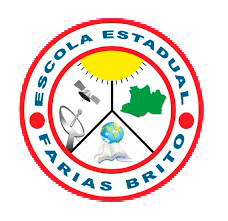

Work Experience
2021
Web Developer | Front - End
CMD Consultoria
I performed front-end web development activities (HTML, CSS, JavaScript, ReactJS) for an academic project of CMD Consultoria company in partnership with my university, as part of my Supervised Internship.

2018 - 2021
Computer Science
Centro Universitário do Norte - UNINORTE
Bachelor's degree in Computer Science from Uninorte University, one of the renowned universities in the northern region of Brazil.
2018 - 2020
HelpDesk
Infosystem
Performed the following activities:
1. Maintenance and formatting of desktops and notebooks.
2. Installation, configuration, and software updates.
3. Opening and closing incidents.
4. Testing systems to check for any slowness or failures.
5. Customer service and support.
6. Ticket management (LiveAgent and AzureDesk).
7. Remote support via TeamViewer and AnyDesk.
2015 - 2017
High School
Escola Estadual Farias Britto
O ensino médio consiste na última etapa na educação básica no Brasil. O objetivo desta etapa de ensino é dar uma formação voltada para o mercado de trabalho e universidades.
